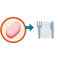
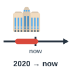
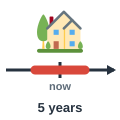
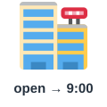
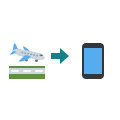
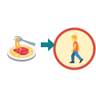

before
قبل
Wash your hands before lunch.
اغسل يديك قبل الغداء.
Time Connectors
مرّر الماوس على السماعة أو اضغط عليها لتسمع النطق. السماعة الكبيرة نطق أمريكي (وهو المكتوب بالرموز)، وزر UK نطق بريطاني.

قبل
Wash your hands before lunch.
اغسل يديك قبل الغداء.
بعد
Let's talk after the meeting.
لنتحدث بعد الاجتماع.
خلال / أثناء
Please turn off your phone during the film.
من فضلك أغلق هاتفك أثناء الفيلم.
بينما
She called while I was driving.
اتصلت بينما كنت أقود.
عندما / متى
Call me when you get home.
اتصل بي عندما تصل إلى البيت.

منذ (نقطة زمنية)
I've worked here since 2020.
أعمل هنا منذ 2020.

لمدة
I've lived here for five years.
أعيش هنا منذ خمس سنوات.

حتى
The shop is open until nine.
يفتح المتجر حتى التاسعة.
في موعد لا يتجاوز
Please send it by Friday.
من فضلك أرسله في موعد أقصاه الجمعة.
من (بداية)
I work from nine to five.
أعمل من التاسعة إلى الخامسة.

بمجرد أن
I'll call you as soon as I arrive.
سأتصل بك بمجرد وصولي.
في غضون ذلك
Dinner is nearly ready. Meanwhile, set the table.
العشاء شبه جاهز. في غضون ذلك، جهّز المائدة.

بعد ذلك
We had dinner and went for a walk afterwards.
تناولنا العشاء وذهبنا للتمشية بعد ذلك.
مسبقًا
Let me know beforehand if you can't come.
أخبرني مسبقًا إن لم تستطع الحضور.
أخيرًا
The bus finally arrived.
وصلت الحافلة أخيرًا.
أولًا
First, read the instructions.
أولًا، اقرأ التعليمات.
تاليًا
What should we do next?
ماذا نفعل بعد ذلك؟
في الوقت نفسه
They both spoke at the same time.
تكلم كلاهما في الوقت نفسه.
ستسمع كلمة من كلمات الصفحة، فاضغط على الصورة التي تعبر عنها.
الكلمات المميزة هي كلمات هذه الصفحة. اضغط على أي كلمة ليبدأ الصوت منها ويكمل ما بعدها.
When does the conference start? I've been waiting here since eight.
متى يبدأ المؤتمر؟ أنا أنتظر هنا منذ الثامنة.
At nine, but the speakers will arrive before the guests.
في التاسعة، لكن المتحدثين سيصلون قبل الضيوف.
What should we do first?
ماذا نفعل أولًا؟
First, let's check the room. Please send me the list as soon as you can.
أولًا، لنتفقد القاعة. من فضلك أرسل لي القائمة بمجرد أن تستطيع.
I'll do it while you test the microphones. Meanwhile, who is ordering the food?
سأفعل ذلك بينما تختبر الميكروفونات. وفي غضون ذلك، من سيطلب الطعام؟
Nour is. She has to confirm the numbers by ten.
نور. عليها تأكيد الأعداد في موعد أقصاه العاشرة.
Will people have lunch after the first session?
هل سيتناول الناس الغداء بعد الجلسة الأولى؟
Yes. Lunch is from twelve until one, and nobody may leave during the speech.
نعم. الغداء من الثانية عشرة حتى الواحدة، ولا يجوز لأحد المغادرة أثناء الكلمة.
And what happens next?
وماذا سيحدث بعد ذلك؟
Two workshops will run at the same time for two hours.
ستُعقد ورشتان في الوقت نفسه لمدة ساعتين.
We should have told everyone beforehand.
كان ينبغي أن نخبر الجميع مسبقًا.
I'll send a message now. We can relax afterwards.
سأرسل رسالة الآن. يمكننا الاسترخاء بعد ذلك.
Look! The first speaker has finally arrived.
انظر! لقد وصل المتحدث الأول أخيرًا.
الكلمات المميزة هي كلمات هذه الصفحة. اضغط على أي كلمة ليبدأ الصوت منها ويكمل ما بعدها.
Moving to a new city takes careful planning. I started looking for an apartment three months before my new job began, and I have lived here since April. First, I made a list of everything I had to do. I wanted to sign the contract by the end of the month, so I visited ten places in two weeks. I stayed with my cousin for a while, from March until the day the apartment was ready. During that time, I packed my books while my brother painted the walls. Meanwhile, my mother was calling us at the same time every evening to give us advice. When the big day came, I told the movers everything beforehand. They arrived before seven and started as soon as the truck was parked. After that, we carried the heavy boxes upstairs. Next, we set up the beds. Afterwards, we were so tired that we sat on the floor and ate sandwiches. Finally, the place began to feel like home.
يتطلب الانتقال إلى مدينة جديدة تخطيطًا دقيقًا. بدأت البحث عن شقة قبل ثلاثة أشهر من بدء عملي الجديد، وأعيش هنا منذ أبريل. أولًا، أعددت قائمة بكل ما عليّ فعله. أردت توقيع العقد في موعد أقصاه نهاية الشهر، فزرت عشرة أماكن خلال أسبوعين. وأقمت عند ابن عمي لبعض الوقت، من مارس حتى اليوم الذي أصبحت فيه الشقة جاهزة. وخلال ذلك الوقت حزمت كتبي بينما كان أخي يطلي الجدران. وفي غضون ذلك كانت أمي تتصل بنا في الوقت نفسه كل مساء لتقدم لنا النصائح. وعندما جاء اليوم الكبير، أخبرت عمال النقل بكل شيء مسبقًا. وصلوا قبل السابعة وبدؤوا بمجرد أن رُكنت الشاحنة. وبعد ذلك حملنا الصناديق الثقيلة إلى الطابق العلوي. ثم جهزنا الأسرّة. وبعد ذلك كنا متعبين جدًا حتى إننا جلسنا على الأرض وأكلنا السندويتشات. وأخيرًا بدأ المكان يبدو كأنه بيت.